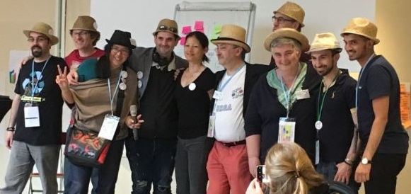

Eric Patrizio
Artisan logiciel, influenceur Agile
Software craftsman, agile enthusiast
Paris, France.Je suis développeur backend (environ 20 ans d'expérience en développement logiciel dans des environnements web) spécialisé en PHP, Symfony, PostgreSQL. Je me forme depuis peu au développement frontend, via ReactJS, ce qui m'apporte beaucoup implicitement dans la conception d'API. Je porte une grande attention à la qualité du code source, je m'intéresse particulièrement à l'approche DDD (Domain Driven Design) pour l'écriture de mon code métier. Je suis avec attention les mouvements "Artisanat du Logiciel" et "DevOps". De manière générale, je suis passionné par les valeurs portées par l'Agilité, les communautés Open Source et le logiciel libre. Ainsi, j'accompagne les équipes dans leur transformation agile (méthodes et outils).
Depuis 2016, je suis adhérent de l'AFUP (Association Française des Utilisateurs de PHP). Depuis 2018, je suis membre de l'équipe d'organisation de la conférence Agile France.
I am backend developer (about 20 years of experience in software development in web environments) specialized in PHP, Symfony, PostgreSQL. I am currently training in frontend development (ReactJS), which brings me a lot in API design. I pay great attention to source code quality, and i am particularly interested in DDD (Domain Driven Design) approach when i write my business code. I am therefore attentive to the "Software Craftsmanship" and "DevOps" movements. I am passionate about Agile values, Open Source communities and free software. I support teams in their agile transformation (methods and tools).
Since 2019, i am a member of AFUP (French Association of PHP Users). Since 2018, i am part of the Agile France Conference organization team.
Actualité
- 29 juin au 3 juillet 2020 - Conférence Frug'Agile France
- 24 & 25 octobre 2019 - Forum PHP
- 20 septembre 2019 - Agile Pays Basque
- 13 & 14 juin 2019 - Conférence Agile France
- REX Transformation Agile - Les slides de mon intervention
- 28 mai 2019 - Meetup Agile Extia
- Intervention REX Transformation Agile
- 16 & 17 mai 2019 - Conférence NewCrafts Paris
- 16 avril 2019 - Meetup Agile France
- REX Transformation Agile - Les slides de mon intervention